Four moves: stack the reads, call by likelihood, filter honestly, annotate to action.
Learning objectives
- Classify a DNA variant by size and structure (SNV, INDEL, SV, CNV) and name the clinical consequence of each class.
- Read a samtools pileup and describe what each column means.
- Compute a genotype likelihood from a small pileup by hand, and explain why variant calling is Bayesian rather than thresholding.
- Name the three pre-calling pipeline steps (mark duplicates, INDEL realignment, base-quality recalibration) and explain what each removes.
- Pick the right caller (GATK, bcftools, DeepVariant, Strelka2, Manta) given a problem — germline SNVs, somatic variants, structural variants.
- Read a VCF line and extract REF, ALT, QUAL, GT, AD, DP, GQ, VAF.
- Explain why SVs need a different algorithm family, and name the three signal channels SV callers exploit.
- Annotate a VCF with functional consequences and identify the canonical public databases at each stage.
Part 1 · 30 min What is a Variant?
1.1 Variants and mutations
Two people's genomes differ. On average, at one base out of every thousand. Multiplied across a 3.1 Gb human genome, that's roughly three to four million differences per individual. Every clinical diagnostic genomics workflow and every population-genetics study in the last twenty years exists to find and interpret those differences.
A variant is a position in a genome where the sample sequence differs from a reference sequence. A mutation is a change in DNA sequence that happened during replication, repair, or environmental damage — a dynamic event in time. In practice the two words are used interchangeably, but the distinction matters: "variant" is what you observe in a dataset; "mutation" is the biological process that created it. A variant at the same position in millions of people is still a variant but hardly a mutation anymore; a variant unique to one patient's tumor is both.
Variants arise in three regimes:
- Inherited (germline). Present in the sample from the time of conception. Found in roughly every cell of the body. The substrate of inheritance and population genetics.
- Somatic. Arose after conception in a subset of cells — most infamously in cancer, where a lineage of cells accumulates driver mutations. Found in only a fraction of the sample's cells, which means variant-supporting reads are a minority of reads at that position.
- De novo. Present in a child but in neither parent — arose in the parental germline or in the embryo. A specific, important subset of germline variants.
1.2 Classification by size and structure
Variants form a continuous size spectrum, but we chop that spectrum into four operational bins because different tools work on different bins.
- Single-nucleotide variants (SNVs) — one-base substitution. A:T → G:C, or any other flip. The most common variant class by a factor of ten.
- Insertions / deletions (INDELs) — a few bases inserted or deleted, typically 1–50 bp. Orders of magnitude rarer than SNVs but disproportionately impactful: a 1-bp deletion inside a coding region creates a frameshift that can knock a protein out entirely.
- Structural variants (SVs) — large changes, typically ≥50 bp: deletions, insertions, duplications, inversions, translocations. Rarer still per individual but implicated in a large fraction of rare disease and cancer.
- Copy-number variants (CNVs) — a sub-class of SV where the dosage of a large region changes (usually duplication or loss). Can be a single extra copy or many.
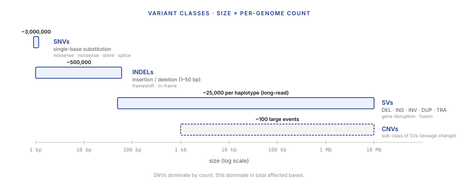
The other axis people care about is inheritance: germline (present at birth, in every cell) vs somatic (acquired, subset of cells). Germline callers expect every variant to be at ~50% or ~100% allele frequency (one copy of two, or two of two). Somatic callers have to handle a variant present in 5% of reads because only 5% of cells in the tumor have it. Completely different statistical problem on the same pileup.
1.3 SNVs and their consequences
SNVs are the dominant variant class — about 3 million per human genome, out of the 3–4 million total variants. The vast majority are neutral; a small minority are clinically or evolutionarily consequential. The consequence depends on where the SNV falls.
If the SNV is in a non-coding region (about 98% of the genome), it may do nothing, or it may alter a regulatory element (promoter, enhancer, splice site) with effects that range from subtle to dramatic. If the SNV is in a coding region, the effect depends on how it changes the codon at that position:
- Synonymous / silent. The new codon still codes for the same amino acid. No protein change. Historically treated as neutral; modern genetics has caught a few exceptions involving splicing or codon-usage effects, but the default assumption holds.
- Missense. The new codon codes for a different amino acid. Protein sequence changes. Impact ranges from "no detectable effect" to "complete loss of function," depending on which residue and how the chemistry shifts.
- Nonsense. The new codon is a stop codon. Protein is truncated — usually a loss-of-function allele, because truncated proteins are degraded or non-functional.
- Splice-region. The SNV disrupts a splice donor or acceptor site at an exon boundary. Can produce a frameshift, skip an exon, or introduce an intron — consequences ripple through the resulting protein.
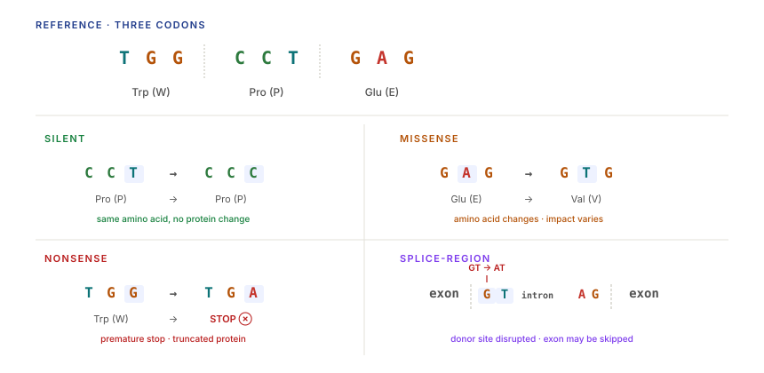
1.4 INDELs and frameshifts
INDELs are insertions and deletions of small numbers of bases. They are much rarer than SNVs — roughly 1:10 ratio of INDELs:SNVs per genome — but they cause disproportionate harm because of a single arithmetic fact: DNA is read in triplets.
An INDEL of length that is a multiple of 3 adds or removes whole codons. The protein is one or a few amino acids longer or shorter, but the reading frame downstream is preserved. Impact is like a missense variant: sometimes benign, sometimes severe.
An INDEL of length that is not a multiple of 3 shifts the reading frame. Every codon downstream of the INDEL is now wrong. The translation machinery reads random-looking nonsense until it hits a premature stop codon — the protein is truncated, and the truncated transcript is usually degraded by nonsense-mediated decay. This is a frameshift variant, and it is almost always a complete loss-of-function of the affected allele.
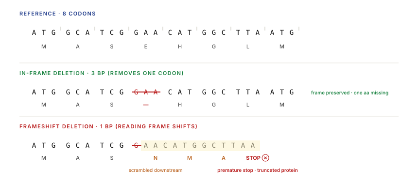
1.5 Why we care
The stakes for variant calling are not abstract:
- Clinical diagnostics. A single pathogenic variant in BRCA1 changes cancer surveillance recommendations. A SERPINA1 Z/Z genotype changes pulmonary care. Every week a radiologist's or oncologist's decision hinges on a variant call from a pipeline like the one in this lecture.
- Rare disease. Whole-genome / whole-exome sequencing identifies causal variants for otherwise-undiagnosed conditions. The clinical labs running this in 2024 produce ~40% diagnostic yields.
- Population genetics. gnomAD's ~1 million exomes / ~100k genomes catalog lets every new variant be looked up for population frequency, which is the strongest single predictor of clinical significance.
- Cancer genomics. Somatic variant calling from tumor/normal pairs identifies driver mutations and informs targeted therapy choices (EGFR variants → specific TKI choices in NSCLC).
Part 2 · 40 min Variant Calling Mechanics
2.1 What variant calling is, start to finish
Variant calling is the bridge between a BAM file (reads aligned to a reference) and a VCF file (a list of positions where the sample differs from the reference, with evidence). In between sits the caller.
The canonical inputs:
- A reference FASTA (the reference genome sequence, e.g. GRCh38).
- An aligned BAM of reads from the sample, coordinate-sorted and indexed.
- Optionally, a known-variants VCF (dbSNP, ClinVar) for base-quality recalibration and joint calling.
The canonical output:
- A VCF file — one row per variant site per sample, with reference allele, alternate allele(s), per-sample genotype, quality scores, and caller-specific fields.
The canonical pipeline:
[reads] → align → [BAM] → mark duplicates → realign INDELs → recalibrate base qualities → [clean BAM]
→ caller → [raw VCF] → filter → [filtered VCF] → annotate → [final VCF]
Every stage matters. Skipping any one produces a VCF that looks normal until someone runs downstream analysis on it and the numbers stop making sense.
2.2 The pileup: aligned reads, column by column
Before a caller runs, the information at each position is organised into a pileup: at every reference position, list every read that overlaps it, along with the base that read carries at that position and the quality score of that base.
The samtools mpileup format is the canonical text representation:
chr1 1000 A 8 ,,...,.,^] IIIII!III
Column-by-column:
- Chromosome (
chr1). - Position (
1000, 1-based). - Reference base at that position (
A). - Depth — number of reads overlapping the position (
8). - Read bases — one character per read.
.means "same as reference, on forward strand.",means "same as reference, on reverse strand." Upper-case letter (ACGT) means "mismatch, forward strand." Lower-case (acgt) means "mismatch, reverse strand."^]starts a new read;$ends one;+3AAA/-2TTencode INDELs at the next position. - Base qualities — one ASCII character per read, Phred-encoded (§Lecture 1).
The compressed grammar is dense but lets you eyeball a variant: a column with ,,.,,., shows seven reference bases; a column with ,,A,A,A, shows seven reads where three call A and four call reference. That's a candidate heterozygous SNV at frequency 3/7.
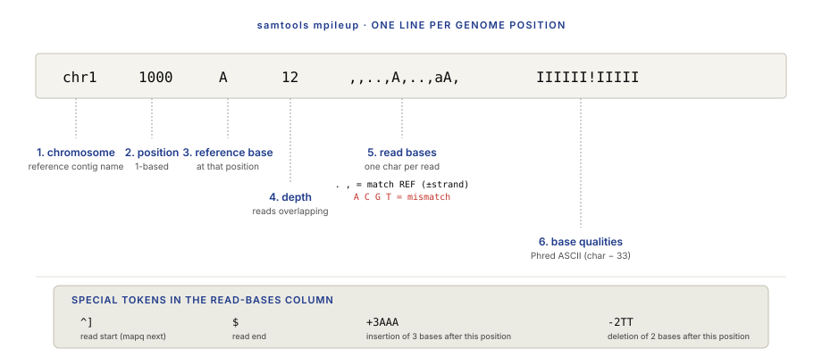
2.3 The vocabulary of a variant record
Every caller (and the VCF format itself) speaks the same vocabulary. Learning it is half the battle.
- REF — the reference allele. Usually one base for a SNV, longer for an INDEL.
- ALT — the alternate allele. Can be multiple if the site is multiallelic (e.g.,
REF=A, ALT=C,G). - DP — depth of coverage at the site. Number of reads usable for calling.
- AD — allelic depths. Reads-per-allele as a comma-separated list.
AD=12,5means 12 reads support REF, 5 support ALT. - VAF / AF — variant allele frequency.
ALT_reads / total_reads= 5/17 = 0.294 in the example above. For germline diploid samples, expected VAFs are approximately 0 (homozygous reference), 0.5 (heterozygous), or 1.0 (homozygous alternate). - GT — genotype. For diploids, written as
0/0,0/1,1/1, or./.. The digits are indices into[REF, ALT1, ALT2, …].0/0= homozygous reference.0/1= heterozygous.1/1= homozygous alternate.1/2= compound heterozygous with two different ALT alleles../.= missing, caller couldn't decide. - GQ — genotype quality. Phred-scaled confidence that the called genotype is correct.
GQ=30means probability of error ≤ 10⁻³. - QUAL — site-level variant quality. Phred-scaled probability that there is any variant at this site.
- FILTER — a string label summarising whether the caller thinks this call is real.
PASSmeans the call survived all filters; anything else is a named failure (e.g.,LowQual,HighDP,StrandBias).
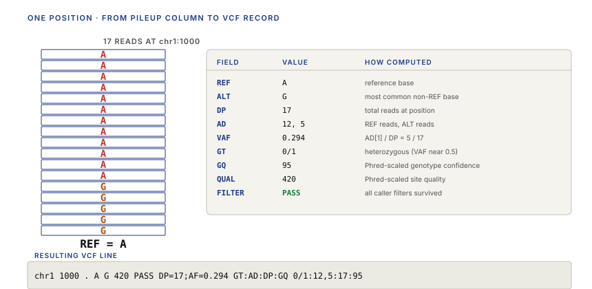
2.4 The ideal case — and why it doesn't exist
If everything worked perfectly, variant calling would be trivial.
Imagine a 100× coverage sample with zero sequencing errors and perfect alignment. At a true heterozygous SNV, you'd see 50 reads carrying the reference base and 50 reads carrying the variant base. At a true homozygous site, 100 reads all agree. At a true reference site, 100 reads all match reference. A threshold — "call a variant if ALT count ≥ some number" — would work perfectly.
Real data looks nothing like that. Seven things break the ideal:
- Sequencing errors. Illumina reads have ~0.1–1% per-base error. At 100× coverage, a true reference site will show 0–2 spurious non-reference bases on average — enough to create false positives if you just threshold.
- Non-uniform coverage. Some positions have 10×, some have 150×. Thresholds that work at 30× either miss variants at 10× or over-call at 150×.
- Mapping errors. Reads from repeats, paralogs, or pseudogenes can land on the wrong homologous region and show up as fake variants.
- INDELs near the position of interest. If a nearby indel isn't realigned (§3.1), it gets expressed as a cluster of fake SNVs — a well-known source of noise.
- Strand bias. True variants typically show approximately equal support from forward and reverse strands. A variant called entirely from one strand is almost always an artifact of library prep or PCR.
- Systematic base-quality errors. Certain sequence contexts have elevated error rates that the machine's quality-score assignment underestimates. Uncalibrated quality scores over-confidently endorse real errors.
- Low allele frequency (somatic calling). A tumor at 30% purity harboring a variant in 50% of cancer cells shows the variant at VAF = 0.15 — well within noise for germline-style thresholds. Somatic callers have to distinguish 0.15-VAF true calls from noise at the same VAF.
Every one of those problems has a corresponding fix in modern pipelines. The next three subsections cover the fixes.
Part 3 · 45 min Making Variant Calling Work
3.1 The pre-calling pipeline
Before a caller runs, three pre-processing steps clean up the BAM. Each removes a specific class of artifact.
1. Mark duplicates. PCR amplification during library prep creates multiple reads from the same original template fragment. Those duplicates carry identical sequence and identical errors; counting them as independent evidence overstates the evidence for any artifact they contain. Picard MarkDuplicates or samtools markdup flags duplicate reads so the caller ignores them. Cost: a few CPU-minutes. Saves: dozens of spurious variants per genome.
2. INDEL realignment. A single INDEL near the end of a read is often misaligned as many small substitutions — the aligner preferred to call mismatches rather than open a gap because mismatches were locally cheaper. Local realignment around known or candidate INDEL sites revisits the region with a gap-aware aligner and produces a cleaner BAM.
Historically, GATK's IndelRealigner was a required step. Modern callers (GATK4 HaplotypeCaller, DeepVariant) do local re-assembly internally and don't need a separate realignment pass — they look at the reads in windows and construct candidate haplotypes on the fly, effectively doing the realignment inside the caller. If you're running an older pipeline or a simpler caller (bcftools), explicit INDEL realignment still matters.
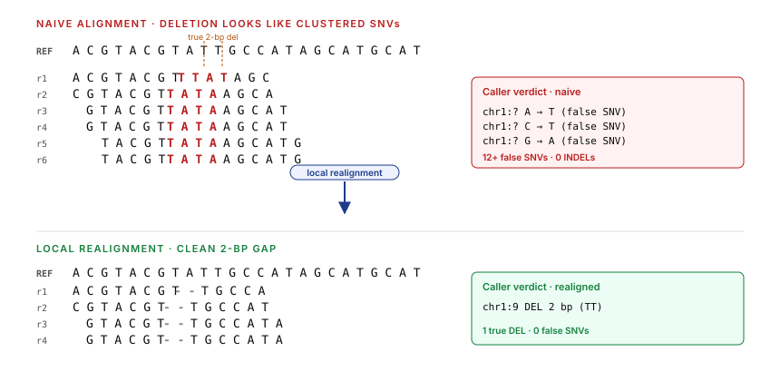
3. Base-quality score recalibration (BQSR). The sequencer assigns a Phred quality score to every base. These raw scores are systematically off: the machine uses a calibration learned at manufacturing time, but sequence context (homopolymers, GC-extreme regions) and sample-specific chemistry produce error rates that deviate from the nominal curve. BQSR re-estimates the quality scores empirically by looking at known variant sites (dbSNP, known polymorphisms) and assuming any mismatch not at a known site is an error — then bucketing mismatches by context and computing the empirical error rate per bucket. The output is a new per-base quality string that is closer to the empirical truth.
BQSR matters most when your caller is Bayesian and uses quality scores as likelihoods. If the caller treats Q30 as "10⁻³ error probability" but the real error rate at that context is 10⁻², the caller under-weights errors and over-calls variants.
3.2 Caller families — from thresholds to deep learning
Variant callers have evolved through three generations:
Generation 1 — Heuristic. Count reads. Apply thresholds. SOAPsnp, early MAQ. Fast, brittle, obsolete.
Generation 2 — Bayesian. Treat genotype calling as posterior-probability estimation. For every position, given the observed bases and qualities, compute
where G ranges over possible genotypes (0/0, 0/1, 1/1), D is the observed reads-and-qualities at the position, and P(G) is a prior over genotypes given population allele frequencies. The likelihood P(D | G) factors across reads: each read's contribution is P(observed base | true genotype, quality) computed from the Phred score. Then the caller picks the maximum-posterior genotype.
bcftools and GATK UnifiedGenotyper are second-generation callers. GATK HaplotypeCaller is the modern workhorse — local de-novo assembly of reads in a window, candidate haplotype scoring, and a pair-HMM likelihood for each read against each haplotype. Gives up pure per-position independence for local context.
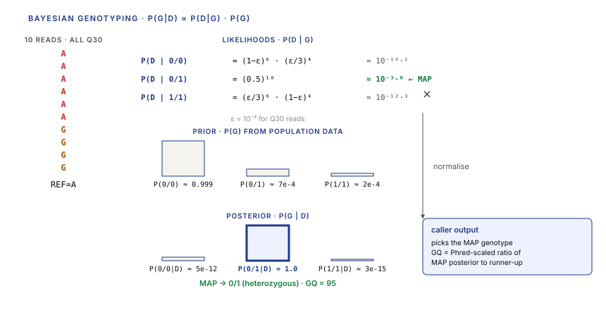
Generation 3 — Deep learning. DeepVariant (Google, 2018) dispenses with an explicit statistical model. Instead:
- Convert the pileup at every candidate position into a small RGB image — columns are genome positions, rows are reads, pixel colours encode base identity, quality, strand, and mismatch-to-reference.
- Feed the image through a convolutional neural network trained on millions of benchmarked variant examples.
- Output: a three-way classification — homozygous reference, heterozygous, homozygous alternate — and a confidence score.
The training data is standardised (Genome in a Bottle's HG001–HG007 samples with orthogonal-truth VCFs), and the CNN — initially Inception-v3, now a custom architecture — learns context-specific features that a Bayesian model would have to encode explicitly. DeepVariant beats every Bayesian caller on benchmark accuracy, at the cost of ~2–3× runtime and GPU dependence.
3.3 Variant-call quality and filtering
A raw VCF from any caller contains both high-confidence calls and noise. Filtering splits the two. The standard quality signals:
- QUAL — site-level variant quality (§2.3). Usually a per-caller empirical scale, not directly comparable across callers.
- DP — too low means too little evidence; too high usually means a mapping-error region (repeat, paralog). Both tails should be filtered.
- GQ — genotype quality. Low GQ means the caller couldn't cleanly decide between two genotypes.
- FS / StrandOddsRatio (SOR) — strand-bias metrics. A variant supported only by forward-strand reads is probably an artifact.
- MQ / MQRankSum — mapping-quality metrics. Variants in low-mapping-quality regions (repeats) are suspect.
- ReadPosRankSum — whether variant-supporting reads cluster near read ends (where quality is worst). Clustering = artifact.
Two filtering paradigms:
- Hard filtering. Apply per-metric thresholds.
QUAL < 30→ reject.DP < 10→ reject. Simple, interpretable, tunable. Used by bcftools pipelines, and recommended for small-sample studies where you can't train a model. - VQSR / ML-based. Fit a Gaussian mixture model (GATK's VQSR) or a neural network (hap.py's filter) to a labeled subset of variants from known-truth sites; use the model to classify all sites. Strictly better than hard filtering when you have the data to train it; worse when you don't.
3.4 Somatic vs germline calling
Germline and somatic callers share the pipeline (aligned BAMs → VCF) but solve different statistical problems.
Germline callers assume a diploid genome. At every position, the true genotype is one of three (0/0, 0/1, 1/1), and the VAF of a variant should be very close to 0, 0.5, or 1.0. Evidence of a variant at VAF = 0.15 means something is wrong — probably a mapping artifact or sample contamination. Germline callers: GATK HaplotypeCaller, DeepVariant, bcftools call, Strelka2 (germline mode).
Somatic callers expect a mixture. The sample is a tumor with unknown purity (say, 30% tumor, 70% surrounding normal tissue) harboring a subset of variants each present in a subset of cancer cells. A variant in 50% of tumor cells in a 30% pure sample shows at VAF = 0.15 — that's a real, important variant. The caller has to distinguish it from sequencing noise at the same apparent frequency.
The standard approach: matched tumor/normal calling. Sequence both the tumor and a matched normal tissue (usually blood) from the same patient. At every candidate position, compare the tumor pileup to the normal pileup: a true somatic variant is present in the tumor and absent from the normal. Callers: Mutect2 (GATK), Strelka2, VarScan2, DeepVariant's somatic mode.
Somatic callers also have to handle subclonal structure: a single tumor is often a mixture of sub-populations (clones) with different variant complements. A variant in 80% of cells is a "clonal" driver; one in 5% of cells is a late "sub-clonal" event. Both are real, and both carry different implications — clonal variants inform what the tumor "is," sub-clonal variants inform resistance and heterogeneity.
Part 4 · 45 min Structural Variants
4.1 Why SVs need a different algorithm
SNVs and small INDELs are within-read events — a single read can carry the complete signal of the variant. A 150 bp read has a SNV visible as one mismatched base; it has a 5 bp deletion visible as a 5 bp gap inside the read's alignment.
Structural variants span distances much larger than a read. A 5 kb deletion cannot be seen inside a 150 bp read — no single read carries the break. Instead, the evidence shows up as a pattern across multiple reads: some read pairs land much further apart than expected, some reads split across the breakpoint and half-map to each side, the coverage dips to zero inside the deleted region. A SV caller reconstructs the event from this multi-read evidence.
The three signal channels every SV caller uses:
- Discordant read pairs. A paired-end read library has known insert-size distribution (say, mean 400 bp, SD 100 bp). If a read pair lands with 5000 bp between ends, that pair has probably straddled a ~4600 bp deletion. Collect enough discordant pairs clustering around the same two positions and you've localised a deletion.
- Split reads. A single read spanning a breakpoint aligns to the reference with the first half matching one location and the second half matching a distant location. The aligner reports both alignment segments; the break in between is the breakpoint itself. Split reads give single-base-resolution breakpoints — the gold standard for SV calls.
- Read depth. A homozygous deletion drops the coverage inside the deleted region to zero. A heterozygous deletion halves it. A duplication doubles it. Depth-based calling alone can detect large CNVs from a single sample; combined with discordant pairs and split reads, it disambiguates tough cases.
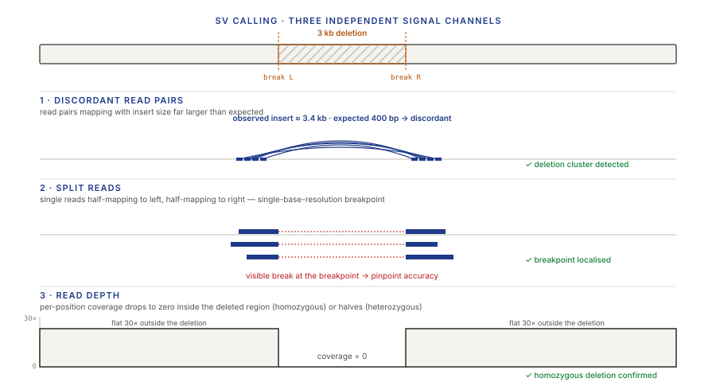
4.2 Genome structure context
SVs reshape the genome at scales that matter for its biology. To understand why a deletion or inversion is consequential, you need a minimum mental model of genome organisation:
- The human genome is about 3.1 Gb of DNA, distributed across 22 autosomes plus the X, Y, and mitochondrial chromosomes.
- Each chromosome is a single linear DNA molecule, with centromeres (dense, repeat-rich regions used for chromosome segregation during mitosis) and telomeres (protective caps at the ends).
- Genes — the protein-coding and RNA-coding units — are spaced across chromosomes at densities of roughly 1 per 50 kb, with huge regional variation. About 2% of the genome codes for protein.
- The remaining ~98% is non-coding: regulatory regions (promoters, enhancers, insulators), transcribed-but-untranslated RNAs, transposable elements, pseudogenes, and large tracts of "junk" whose function is contested.
Structural variants affect function in two regimes:
- Local effects — a deletion removes a gene; an insertion disrupts a splice site; a small inversion flips a regulatory element. Effect is confined to the immediate genomic neighborhood.
- Global effects — a translocation joins two chromosomes in a way that fuses two genes (BCR-ABL in CML is the canonical example: a t(9;22) fusion creates a constitutively active tyrosine kinase that drives the cancer). A megabase-scale inversion can disrupt large chromatin domains and affect many genes at once.
4.3 SV types and naming
Structural variants are classified by what they do to the genome, not by their size (though size is correlated). The six canonical types:
- Deletion (DEL). A contiguous region is absent from the sample. Loss of sequence. Can be heterozygous (one copy lost, one retained) or homozygous (both copies lost).
- Insertion (INS). A sequence is inserted at a position. Can be a new novel sequence, a transposable-element insertion (SINE, LINE), or a tandem duplication of an adjacent sequence.
- Inversion (INV). A segment is reversed in orientation — the sequence is the reverse complement of the reference in that region. No loss or gain of sequence, but breakpoints can disrupt genes and regulatory units crossed at the boundaries.
- Duplication (DUP). A contiguous region is present in multiple copies. Can be a simple tandem duplication (adjacent copies), a dispersed duplication (copies at other locations), or a segmental duplication (large, historically shared between genomic regions).
- Copy-number variant (CNV). The specific case of a DEL or DUP where the number of copies changes. Not a distinct biological mechanism — a CNV is a deletion or duplication measured as a copy-number shift rather than as two breakpoints.
- Translocation (TRA or BND). A piece of one chromosome is joined to a different chromosome. Reciprocal translocations swap arms; non-reciprocal translocations insert one chromosome's material into another unidirectionally. Represented in VCFs as breakend ("BND") records rather than as simple deletions/duplications.
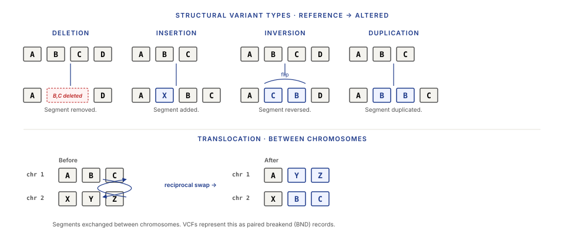
Two details worth knowing:
- Complex SVs — real genomes often contain events that chain multiple primitive operations: an inversion flanked by deletions ("inverted deletion"), a duplication-inversion, chromothripsis (a region shattered and re-assembled). Modern SV callers recognise some of these; most don't.
- Mobile-element insertions are a distinct sub-class of INS that deserve their own callers (MELT, xTea). The inserted sequence is a known transposable element (Alu, LINE-1, SVA); the insertion can be typed and annotated even when the breakpoint uncertainty is high.
4.4 SV callers and their tradeoffs
SV callers specialise by signal channel and by input data. The dominant options in 2024:
- Manta (Illumina / Strelka). Read-pair + split-read. Short-read focused. Fast, conservative. The workhorse for germline SV calling on clinical WGS.
- Delly. Read-pair + split-read. Short-read. More sensitive than Manta but higher false-positive rate. Good for tumor work with aggressive filtering.
- GRIDSS. Read-pair + split-read + local assembly. Short-read. State-of-the-art accuracy for complex SVs but slower.
- SvABA. Split-read + local assembly. Short-read; supports tumor/normal.
- LUMPY. Multi-signal integration framework. Open-source, flexible; requires a separate input from a structural-variant-aware aligner.
- CNVkit / cnvpytor. Depth-based CNV calling. For large (≥10 kb) copy-number events; complementary to the breakpoint callers above.
Long reads (PacBio HiFi, ONT) change the picture. A single 20 kb read spans most of an SV, so read-based detection becomes direct: if the read's alignment shows a 5 kb gap, that's the deletion. Long-read-focused callers — Sniffles, pbsv, CuteSV — routinely detect SVs that short-read callers miss, especially those in repeat-rich regions.
4.5 Long reads and the future of SV discovery
Between 2010 and 2020, short-read SV calling was a discipline of workarounds. Every caller hedged against the fundamental limitation that a 150 bp read can't span a 500 bp repeat, and the bulk of SVs live in exactly those repeat-rich regions.
Long reads removed the limitation. PacBio HiFi (15–25 kb, < 0.1% error) and ONT (up to 100 kb+, 5–15% raw error with error correction) span individual SVs directly. The same Telomere-to-Telomere Consortium whose T2T-CHM13 assembly closed the last gaps in the human reference also reported thousands of SVs that were invisible to the short-read-only 1000 Genomes Project dataset.
The current state of SV discovery:
- Short reads are the workhorse for general clinical WGS because of cost (~$500/genome vs $1500–3000/genome for HiFi). They catch ~60–70% of SVs accurately.
- Long reads are the gold standard for research-grade SV catalogues and for any rare-disease case where short-read analysis has gone nowhere. They catch >95% of SVs, including the hard ones in repeats.
- Ensemble methods (calling with multiple tools and intersecting) beat any single caller in benchmarks. The nf-core/structural-variants pipeline and HGSVC's ensemble workflow are the clinical-grade templates.
Part 5 · 40 min Outputs: VCF and Annotation
5.1 The VCF file format
VCF (Variant Call Format) is the text format for variant-call output. Every caller emits VCF; every downstream tool reads it. Understanding it is non-optional.
A VCF file has three sections:
- Header. Lines starting with
##are meta-information: reference genome, caller version, contig lengths, INFO-field and FORMAT-field definitions, FILTER definitions. One line starting with#CHROMdefines the column names for the data rows. - Data rows. One per variant site. Fixed first 8 columns (CHROM, POS, ID, REF, ALT, QUAL, FILTER, INFO), then per-sample columns.
- Compression + indexing. VCF is plain text; compressed to
.vcf.gz(bgzip, block-gzip, indexable) and indexed with a.tbifile for random access by genomic range.
A simple single-sample example:
##fileformat=VCFv4.3 ##reference=GRCh38 ##INFO=<ID=DP,Number=1,Type=Integer,Description="Total depth"> ##INFO=<ID=AF,Number=A,Type=Float,Description="Allele frequency"> ##FORMAT=<ID=GT,Number=1,Type=String,Description="Genotype"> ##FORMAT=<ID=AD,Number=R,Type=Integer,Description="Allelic depths"> ##FORMAT=<ID=DP,Number=1,Type=Integer,Description="Per-sample depth"> ##FORMAT=<ID=GQ,Number=1,Type=Integer,Description="Genotype quality"> #CHROM POS ID REF ALT QUAL FILTER INFO FORMAT SAMPLE1 chr1 100234 . A G 420 PASS DP=45;AF=0.51 GT:AD:DP:GQ 0/1:22,23:45:99 chr1 100501 rs12345 C T 612 PASS DP=52;AF=1.0 GT:AD:DP:GQ 1/1:0,52:52:99
Two rows: a heterozygous SNV at 100234 and a homozygous alternate SNV at 100501 (the second one has a dbSNP rsID in the ID column). Every column has a defined meaning; every piece of software reading the file relies on the header declarations to interpret the INFO and FORMAT fields.
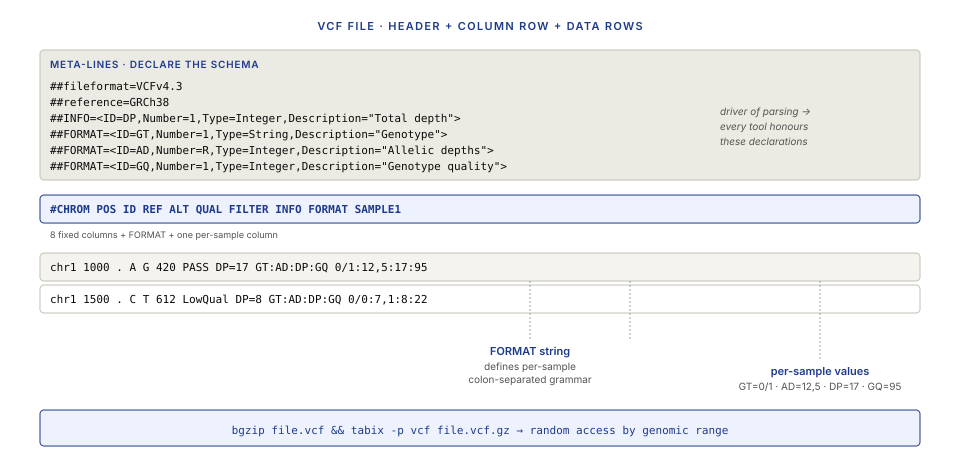
Multi-sample VCFs. A single VCF can hold many samples (a cohort, a trio, a tumor/normal pair). Each sample gets its own data column with its own GT, AD, DP, GQ. Sites are included if any sample has a non-reference call; samples at sites they don't call get a 0/0 or ./. entry.
Phased vs unphased genotypes. 0|1 (pipe, phased) means the caller knows which allele sits on which of the two parental chromosomes. 0/1 (slash, unphased) means the allele-to-chromosome assignment is unknown. Phasing matters for compound-heterozygous analysis and for trio inheritance — unphased data fundamentally cannot distinguish two heterozygous variants in trans (on different chromosomes) from in cis (on the same chromosome). Long-read sequencing and parental trios are the two reliable paths to phasing.
5.2 Filtering VCFs in practice
A raw VCF straight off a caller is not a final product. Filtering workflow typically:
- Quality hard filters. Drop QUAL < 30, DP < 10 or DP > 2×median, GQ < 20. These alone remove most noise without sophisticated training.
- Region filters. Drop variants in low-complexity regions, segmental duplications, known-problematic regions (the "decoy" regions and centromeric repeats in GRCh38). The
ENCODE blacklistis the canonical source. - Allele-frequency filters. For germline research analyses, drop common variants (MAF > 1% in gnomAD) if you're looking for rare-disease variants. For population analyses, keep them.
- Consequence filters. After annotation (§5.3), keep only protein-coding consequences — remove intergenic and intronic variants unless you have a specific reason to analyse them.
The filters compose: hard-filter → region-filter → annotate → consequence-filter → output. Every step is a line in a shell script; every step removes orders of magnitude of variants to leave a human-manageable list at the end.
5.3 Variant annotation
A VCF says "there's a variant at chr7:140753336, REF=A, ALT=T." That doesn't tell a clinician anything. Annotation is the step where each variant is enriched with the information needed to interpret it:
- Gene and transcript context. Which gene does this variant fall in? Which exon? Which codon? What amino acid change?
- Consequence classification. Missense, nonsense, splice-region, intronic, upstream, intergenic.
- Population frequency. How common is this variant in gnomAD? In 1000 Genomes? In population-specific sub-cohorts?
- Clinical significance. Is this variant in ClinVar? With what pathogenicity classification?
- Functional predictions. Computational scores estimating whether a missense variant is deleterious (SIFT, PolyPhen, REVEL, CADD).
- Splicing predictions. Computational scores for variants near splice sites (SpliceAI).
Two annotators dominate the ecosystem:
- Ensembl VEP (Variant Effect Predictor). Gold standard, supports every species, maintained by Ensembl. Slowest but most complete. Reads a VCF, outputs an annotated VCF with CSQ fields.
- snpEff / snpSift. Faster, Java-based, widely used in research pipelines. Similar capabilities to VEP with different database cadence.
A typical annotation adds INFO fields like:
CSQ=T|missense_variant|MODERATE|BRAF|ENSG00000157764|Transcript|ENST00000288602|
protein_coding|15/18||...|p.Val600Glu|...|REVEL=0.932|SpliceAI=0.01
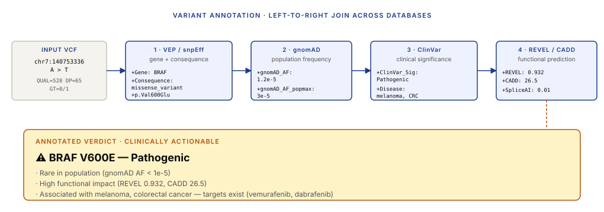
Wrap-up · 10 min Takeaways, homework, and next lecture
What you should take away
- Variant calling bridges alignment and interpretation. Aligned reads in; a filtered, annotated VCF out. Every step in between exists because real data breaks the idealised thresholding model.
- Calling is Bayesian, not thresholding. Per-position posterior genotype probabilities, computed from per-read evidence weighted by Phred quality. DeepVariant replaces the Bayesian layer with a CNN; the underlying inference structure is the same.
- The pre-calling pipeline is not optional. Mark duplicates, INDEL realignment (or haplotype-aware calling), BQSR. Each removes a specific class of artifact; skipping any one leaves a systematic bias that a good caller can't recover from.
- SVs need different algorithms. Read pairs, split reads, and depth are the three signal channels. Short-read SV callers (Manta, Delly, GRIDSS) and long-read callers (Sniffles, pbsv) serve different read regimes; ensembling wins on benchmarks.
- VCF is a sparse encoding. Understand the field grammar and you can reason about what any variant call means. Annotation is the volatile layer that turns calls into clinical interpretations — and should be re-run whenever databases update.
- Filtering is where pipelines silently fail. Over-filtering removes true variants without errors. Always benchmark against a truth set; a 1% recall drop on the benchmark predicts a 1% miss rate on real samples.
Next lecture
Gene expression analysis: from RNA-seq reads to quantified transcript abundances. Pseudo-alignment vs full alignment, count-to-TPM, differential expression, and the statistical models that underlie DESeq2 and limma.
Homework
- Download a public tumor/normal BAM pair (e.g., HCC1143 from the SEQC2 project, or the Genome in a Bottle HG002 reference). Run a germline caller (bcftools or DeepVariant) on the normal. Report: total variants called, PASS fraction, heterozygous/homozygous ratio (should be ~2:1 for a healthy human).
- Take any VCF from step 1. Annotate with Ensembl VEP (web interface is fine). Report: how many missense variants, how many synonymous, how many nonsense. Does the missense:synonymous ratio match expectations from gnomAD summary statistics?
- Using the Genotype Likelihood Calculator in §3.2, set up a pileup with 20 reads: 14 REF, 6 ALT, all Q30. Compute P(D|0/0), P(D|0/1), P(D|1/1) by hand (or with the artifact). Which genotype wins, and by what log-likelihood margin?
- For a hypothetical 2 kb deletion in a heterozygous sample sequenced at 30× short-read coverage: estimate (a) how many discordant read pairs you expect to straddle the breakpoint, (b) how many split reads, (c) the expected depth inside the deletion. Show the arithmetic.
- Read the VCFv4.3 spec for multi-allelic sites. Explain in one paragraph how a site with
REF=AT, ALT=A,ATT(a deletion and an insertion at the same position) is represented, and how a downstream tool should handle the two alternates.
Recommended reading
- McKenna, A., Hanna, M., Banks, E., et al. (2010). The Genome Analysis Toolkit: a MapReduce framework for analyzing next-generation DNA sequencing data. Genome Research 20, 1297–1303.
- Poplin, R., Chang, P.-C., Alexander, D., et al. (2018). A universal SNP and small-indel variant caller using deep neural networks. Nature Biotechnology 36, 983–987.
- Li, H. (2011). A statistical framework for SNP calling, mutation discovery, association mapping and population genetical parameter estimation from sequencing data. Bioinformatics 27, 2987–2993.
- Chen, X., Schulz-Trieglaff, O., Shaw, R., et al. (2016). Manta: rapid detection of structural variants and indels for germline and cancer sequencing applications. Bioinformatics 32, 1220–1222.
- Ebler, J., Ebert, P., Clarke, W. E., et al. (2022). Pangenome-based genome inference allows efficient and accurate genotyping across a wide spectrum of variant classes. Nature Genetics 54, 518–525.
- VCFv4.3 specification: samtools.github.io/hts-specs/VCFv4.3.pdf
- GATK Best Practices: gatk.broadinstitute.org
Appendix — timing summary
| Block | Time | Cumulative |
|---|---|---|
| Part 1 — What is a Variant? | 30 min | 0:30 |
| Part 2 — Variant Calling Mechanics | 40 min | 1:10 |
| Part 3 — Making Variant Calling Work | 45 min | 1:55 |
| Part 4 — Structural Variants | 45 min | 2:40 |
| Part 5 — Outputs: VCF and Annotation | 40 min | 3:20 |
| Wrap-up | 10 min | 3:30 |
Total: ~3h 30min of content.